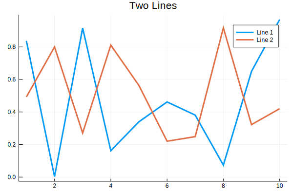

Plotting Example
In this example we showcase how to automatically build and generate plots as part of the documentation deployment process.
The plots in this example are produced by the file docks/src/makeplots.jl The contents of that file are run each time the documentation is deployed.

Note
Plots will only appear in documentation when deployed to github pages.
Orange Box
Here is how you add warning box to your documentation